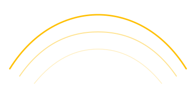
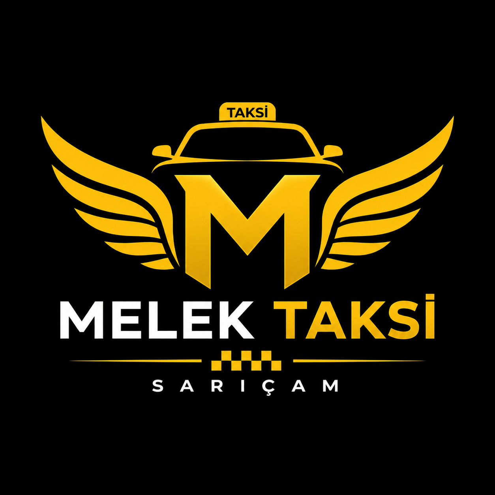

Şehir İçi Ulaşım
Sarıçam ve Adana genelinde güvenli, hızlı şehir içi taksi.

Konumunu paylaş, dakikalar içinde kapında olalım. Güvenli, temiz ve 7/24 hazır.
Mutlu müşteri
Deneyim
Kesintisiz hizmet
Memnuniyet odaklı
Şehir içinden havalimanına, gece dönüşünden kurumsal taşımağa kadar.
Sarıçam ve Adana genelinde güvenli, hızlı şehir içi taksi.
Şakirpaşa'ya 7/24 konforlu ve zamanında transfer.
Şirket çalışanları ve misafirleri için düzenli taşıma.
Mahallene özel sayfalar — tahmini varış süreleriyle.

Sarıçam'da tanıdık bir durak, temiz araçlar ve hızlı yanıt. Melek Taksi güvenilir yolculuk demek.
Bölgeyi bilen, saygılı ve tecrübeli kadro.
Düzenli temizlik ve periyodik bakım.
Nakit veya temassız kredi kartı.
Sarıçam Melek Taksi, yıllardır aynı semtte aynı sözle çalışıyor: çağırdığında geliriz. Gece yarısı hastane, sabah havalimanı, öğlen merkez — her çağrıda sakin, temiz ve zamanında olmak için buradayız.
Sarıçam · Adana
Üç adımda kapınızdayız.
Şimdi veya randevu seçin; konumunuz WhatsApp'a iletilir.
Size en yakın araç hemen bulunduğunuz noktaya yönlenir.
Konforlu ve güvenli şekilde hedefinize varın.
Otel transferinden günlük yola — aklınıza takılanlar.
Evet, araçlarımızda temassız POS cihazı bulunur.
Evet, haftanın 7 günü 24 saat kesintisiz hizmet veriyoruz.
Sarıçam merkez ve yakın mahallelere genellikle 5–10 dakika.